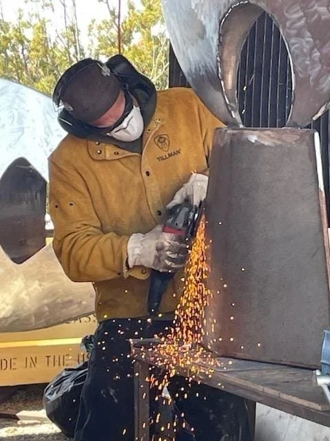
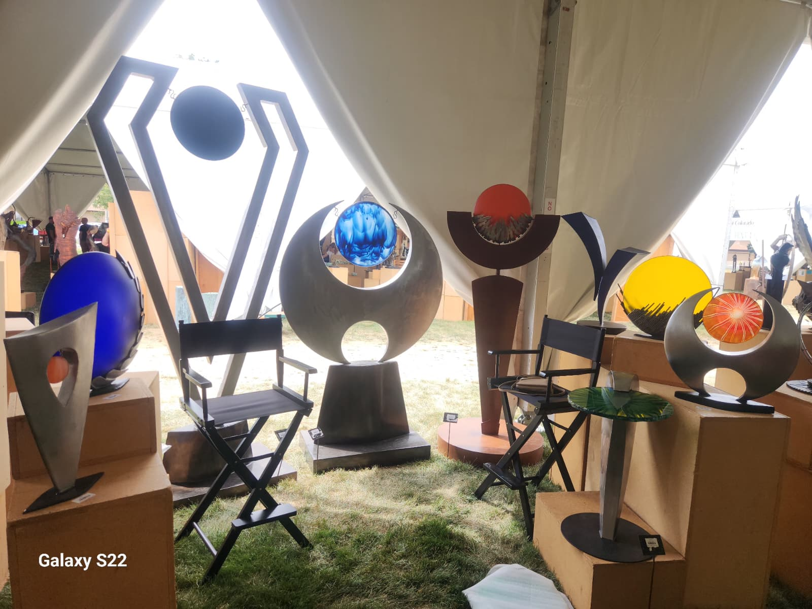

Glass & Steel Artist · Abiquiu, New Mexico
I work with steel and glass out of two studios in Abiquiu, New Mexico. I designed and built both shops from the ground up, along with most of the tools and equipment inside them. The building is part of the process.
My foundation is in glass. I trained in glassblowing and neon art at PRATT Fine Arts Center in Seattle, then spent years evolving that practice through fused glass, slumped glass, and eventually the shattered glass panels that are now a signature part of my work. I taught myself to weld and to forge, and I have been refining that craft with every sculpture since.
Before sculpture, I designed jewelry. Specific pieces sold at Neiman Marcus. I think about that scale even when I am building something ten feet tall -- the precision, the finish, the way a form reads from every angle.
My public work has been placed in Napa Valley and at a sculpture park in Abiquiu. I have participated multiple years in the Loveland Sculpture in the Park, a nationally juried show in Colorado, selling work and returning by invitation each year. Large-scale public installation is where I put my focus, pieces built to live outdoors, to hold up to weather and time, and to belong to the places they occupy.
I also build work sized for a home or a private garden. The materials, the craft, and the standard are the same regardless of scale.
Custom commissions are always welcome.

Training
PRATT Fine Arts Center
Glassblowing and neon art, Seattle, Washington
Juried Shows
Loveland Sculpture in the Park
Multiple years. Invited to return each year.
Public Art
Napa Valley, California
Permanent outdoor installation
Public Art
Abiquiu Sculpture Park
Permanent outdoor installation, New Mexico
Commercial
Neiman Marcus
Original jewelry designs sold through Neiman Marcus
Studio
Abiquiu, New Mexico
Two studios designed and built by hand, including custom tooling

Jim Gregory has participated multiple years in the Loveland Sculpture in the Park, a nationally juried outdoor sculpture show in Loveland, Colorado. He sells work at each show and continues to be invited back.
Large-scale commissions and public installations welcome.
Get in Touch